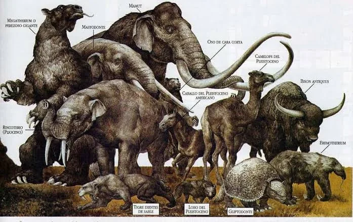
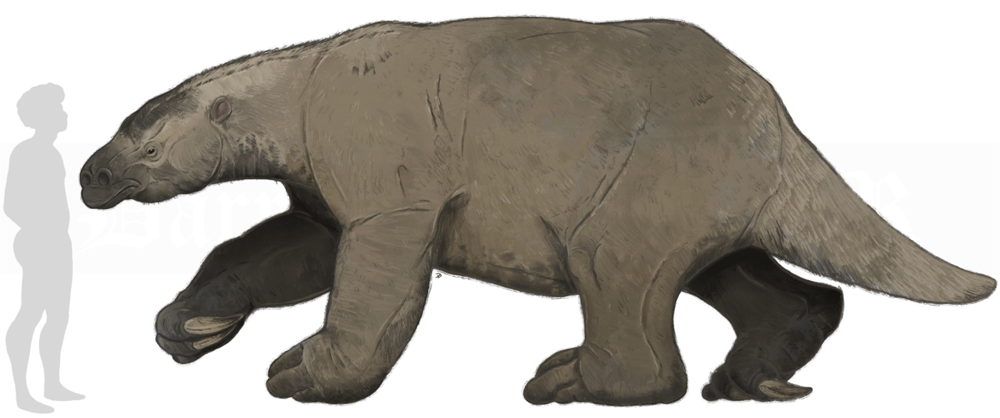
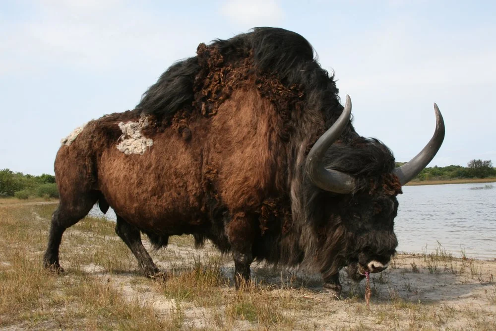
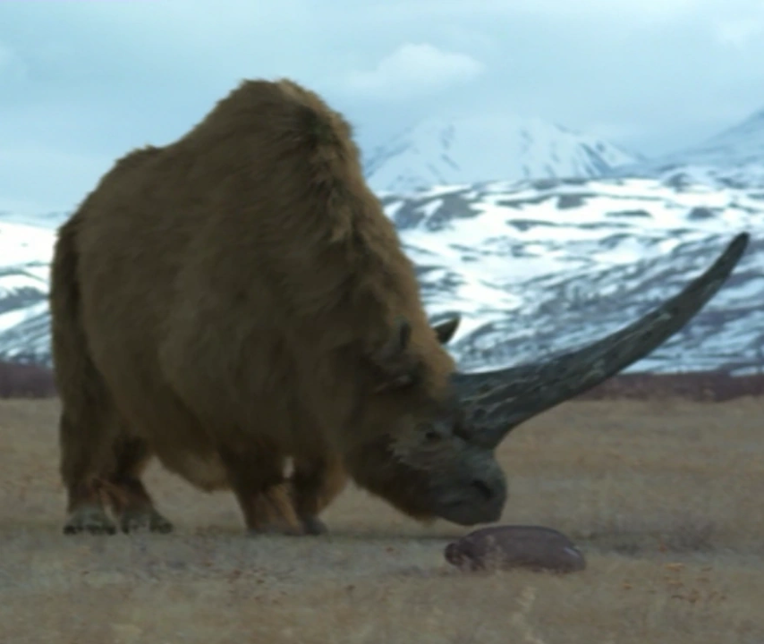
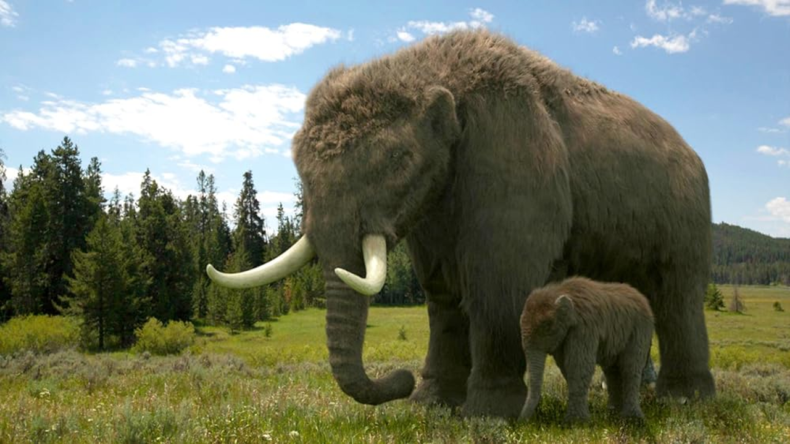
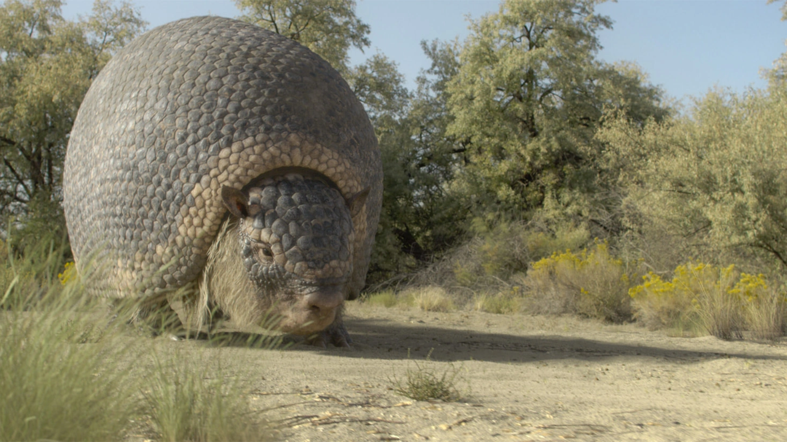
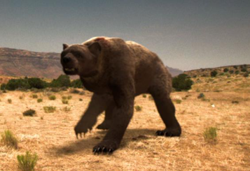
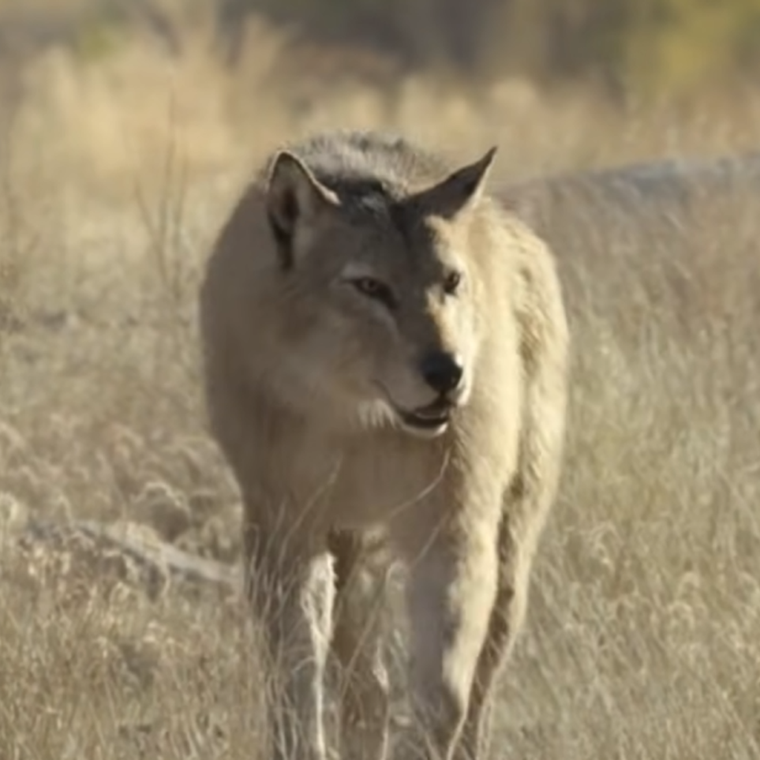
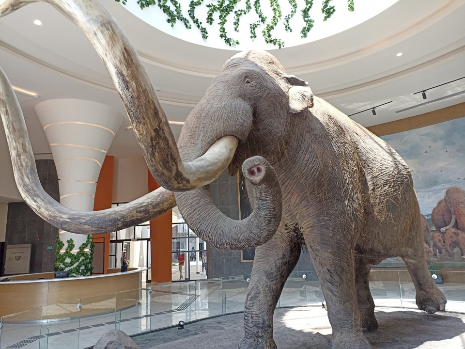

Fauna
Una de las cosas mas destacada fueron los animales iconicos de aquel periodo. El territorio era rico en especies impresionantes, muchas de ellas hoy extintas, como: Herbívoros: Mamuts de Columbia, Gonfoterios (parientes de los elefantes), perezosos terrestres gigantes (más altos que un mamut), gliptodontes (armadillos gigantes) y camellos. Carnívoros: Dientes de sable (Smilodon), leones americanos, lobos terribles y osos de las cavernas.

Cuando hablamos de megafauna, se refiere a animales muy grandes. Y durante la época del pleistoceno la megafauna fue muy diversa en todo el mundo y la mayoría de los ecosistemas continentales exhibían una gran riqueza de especies. Sobre todo de Mamíferos y México no es la excepción, ya que hubo una gran cantidad de mamíferos descubiertos y aun lado con el intercambio americano, especies de Sudamérica migraron a Norteamérica (y viceversa). Por lo que a esto se le llama la megafauna del pleistoceno.
Vida Prehistórica: Los humanos, antepasados de las primeras civilizaciones, convivieron con estas especies, viviendo en refugios rocosos naturales, en lugar de cuevas profundas, cerca de ríos y zonas boscosas. Esta época fue fundamental para la biodiversidad mexicana, creando ecosistemas únicos antes de la gran extinción de la megafauna.
Perezoso Gigante Panamericano (Eremotherium laurillardi)

Muchos conoceran a sid, de las peliculas de la era de hielo. Sin embargo existieron perezosos mucho mas grandes y no tan tiernos como sid. Especificamente es esta especie mexicana. El perezoso terrestre panamericano (Eremotherium Laurillardi). A este grandulon se le estimaba un tamaño de 6 metros de longitud, y 4 metros de altura al pararse sobre sus patas traseras. Y tenia un peso de entre 4 y 6.5 toneladas.
En México, los restos del Perezoso Terrestre Panamericano se han encontrado en elevaciones bajas, medianas y altas respecto del nivel medio del mar, en zonas que durante la última Edad de Hielo correspondían desde matorral hasta bosques tropicales caducifolios y cerca de áreas con vegetación acuática e incluso pastizales, fue un animal adaptable a diversas fuentes alimenticias ya que pudo pasar de comer pasturas a ramonear conforme se le presentara la ocasión.
Bisonte Gigante

Su registro abarca desde el sur de Cánada hasta el sur de México. Superaba en tamaño al bisonte americano, alcanzado un tamaño de 4.5 metros de largo, 2.5 metros de altura hasta la cruz y un peso de entre 150 a 2,000 kg. Su caracteristica mas notoria eran los enormes cuernos de la cabeza. Alcanzaba los 2.2 metros de una punta a la otra, la cual le servía como instrumento de exhibición, como arma frente a otros machos en la época de celo y contra los predadores. Probablemente fue un animal más solitario que sus contrapartes modernas y habitó ambientes mucho más arbolados, lo que puede indicar una forma de vida similar a la del bóvido más grande de la actualidad, el gaur.
Elasmotherium

Con el doble del tamaño del rinoceronte moderno, el elasmotherium era su primo del ambiente frio. Su cuerno principal, único en su especie, era ligeramente curvado y podía alcanzar más de dos metros de largo, superando a un hombre. Presumiblemente, el elasmotherium estaba cubierto de grasa debajo del pelo. El Elasmotherium era muy territorial y no dudaba en embestir contra amenazas percibidas y empalarlas con su cuerno. A pesar de ello, no era totalmente intrépido y se alejaba de mamuts lanudos machos de mayor tamaño . Al igual que otros rinocerontes, el Elasmotherium tenía una vista muy deficiente, pero un olfato muy desarrollado. Esto significa que no podía ver a otros animales a menos que estuvieran muy cerca o directamente a favor del viento .
De este rinoceronte prehistorico se encontro en siberia y asia central.
Mastodonte Americano

Sus fósiles se han encontrado en América desde Alaska y al sur hasta El Salvador; en México su hábitat principal eran los bosques de pino y encino aunque también prosperó en pastizales y bosques tropicales. Con 3 m de altura a la cruz y más de 6 m de largo, fue un ramoneador enorme que se aproximaba a las 7 toneladas de peso en los machos más grandes de su especie.
Gliptodonte

Cuando hablamos de animales de la era de hielo, este es otro de los mas conocidos y méxico, tuvo tambien. Conocidos como Gliptodontes eran armadillos de tamaños enormes. La especie en concreto es Glyptotherium Cylindricum. Tenia 2 metros de longitud y un peso de 400 kg. Su caparazon enorme esta cubierto por escudos oseos y contaba con una cola de garrote pero eran anillos caudales en su cola.
Arctodus (Oso de Cara Corta)

Este oso era de los mas grandes que existieron. Alcanzaba un tamaño de 3 a 3.5 metros de altura al pararse sobre sus patas traseras y tenia un peso de alrededor de una tonelada. Lo que lo convierte en uno de los osos mas grandes en pisar tierras mexicanas. Su existencia abarcó el último periodo glacial, cubrió prácticamente todo el territorio de América del Norte desde Alaska a México, habitó terrenos altos desde matorrales, pastizales, bosques de pino e inclusive zonas de vegetación acuática. Se alimentaba de bisontes, ciervos, caballos, camellos, ejemplares jóvenes de perezosos terrestres gigantes, mastodontes, mamuts y se cree que la carroña formó parte fundamental de su dieta.
Lobo Terrible

De este lobo se tiene registros en México. Era común en zonas de matorral y pastizal a gran altitud sobre el nivel del mar, también frecuentaba los bosques tropicales o de coníferas en búsqueda de alimento; las grandes bestias del Pleistoceno a las que cazaba apoyado principalmente por grupos muy numerosos de lobos que doblegaban a sus presas a base de mordidas o que de igual manera atemorizaban a otros carnívoros ahuyentándolos para quitarles su última cacería.
En 2025 salió la noticia en la que lograron traer crías de estos lobos a la vida, indicando que lograron revivir o traer un animal de la extinción. La aclaración es que lo que hicieron no fue revivir, si no modificar. Lo que hicieron fue modificar los genes del lobo gris para que se parecieran a los del Lobo terrible. Otro detalle a tomar es que no pertenecen a las mismas familias. Básicamente crearon una cosa que no tiene nada que ver con la otra.
Smilodon (Dientes de Sable)
Este es de los mamíferos mas populares de la época. Los primeros restos fósiles del Smilodon fueron descubiertos en la década de 1830. Su nombre significa "diente de escalpelo", aunque se refiere a sus incisivos inferiores, no a sus grandes caninos superiores. El Smilodon poseía una constitución robusta y colmillos de hasta 28 cm. Se cree que cazaba derribando a sus presas con fuerza, inmovilizándolas con sus patas delanteras y usando sus dientes para perforar la garganta, causando asfixia. Su mordida no era tan fuerte como la de otros félidos grandes, pero era un cazador especializado en animales como antílopes, y en el caso del Smilodon populator, macrauchenias, perezosos y gliptodontes.
Se conoce mejor como Smilodon o Dientes de Sable, pero muchos lo llaman erróneamente tigre dientes de sable. Esto se debe a que ambos pertenecen a diferentes familias de felinos. Los tigres modernos pertenecen a la familia Pantheriane, Mientras que los Smilodones pertenecen a la familia extinta Machairodontinae.
Especies de Smilodon:
- Smilodon Populator
- Smilodon Fatalies
- Smildon Gracilis


Las ultimas vivieron en méxico, pero fatalies es la que mas se tiene registro y con mas fósiles encontrados. Desde america del norte hasta america del sur y también en México. Dato extra: Smilodon Fatalies es la especie en la que se basa el personaje de Diego de las peliculas de la Era de Hielo
Mamut Colombino

Rebaño de mamuts colombinos(Ice Age Giants, BBC(2013))
La distribucion de este mamut fue en Estados Unidos y México. El mamut colombino alcanzaba 4 metros de altura en la cruz, y pesaba entre 8 y 10 toneladas. Tenía el mismo tamaño que las especies anteriores de mamuts M. meridionalis y M. trogontherii, y era mayor que el actual elefante africano y que el mamut lanudo, los cuales alcanzan entre 2.7 a 3.4 metros.
Una de las características principales eran sus colmillos de 4 metros de largo, y pesos de hasta 200 kg. A diferencia de su primo lanudo, el mamut colombino no contaba con capas de pelo, siendo mas similar al elefante asiático de la actualidad.
Dato interesante: Durante la construccion del AIFA en el estado de mexico, se han encontrado restos de mamuts colombinos, siendo este uno de los hallazgos con mas ejemplares en todo México. Y debido a eso, se ha construido un museo, siendo este el museo del Mamut (conocido principalmente como Museo Paleontológico de Santa Lucia)

Mamut Lanudo (Mammuthus Primigenius)


Su nombre proviene de su gruesa capa de pelo lanudo de hasta noventa centímetros de largo, dispuesto en forma similar al pelambre del actual buey almizclero. Bajo la piel poseía una capa de grasa de ocho a diez cm de espesor que fortalecía su adaptación al frío. Sus orejas de treinta cm de longitud, eran mucho más pequeñas que las de los elefantes actuales (las de un elefante africano alcanzan 180 cm). Presentaban un abombamiento en forma de cúpula sobre el cráneo y una alta joroba sobre los hombros. Los machos adultos alcanzaban de 2,80 a 3,50 metros y de pesar de 6 a 8 toneladas ( y en el caso de los machos más grandes, podían alcanzar los 4 metros de altura y pesar hasta 12 toneladas). Los colmillos encontrados alcanzan hasta 4,2 m de longitud y ochenta y cuatro kg de peso, pero en promedio tienen 2,5 m y cuarenta y cinco kg. Sus dientes estaban adaptados a las plantas de la tundra, pero habitaba también la estepa herbosa, y la presencia de ramas de árboles en los estómagos de los ejemplares encontrados indica que también recorrían los bosques.
Likes: 0